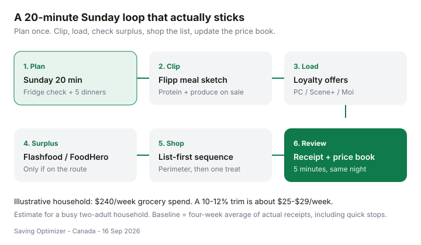

Food & Groceries · Canada
The Canadian weekly grocery system: Flipp → plan → loyalty → surplus → shop
Most Canadian grocery advice is a pile of tips: check unit prices, clip a flyer, join PC Optimum, try Flashfood. None of that is wrong. It also does not stick, because tips are not a week. People know the moves and still wander a Superstore hungry on a Thursday, then pay restaurant prices for the gaps.
This guide is one Canada-native operating system. It uses tools you already have — Flipp, the big-three loyalty programs, and surplus apps — in a fixed Sunday-to-receipt loop. Keep the meals your household likes. Change the defaults around them.
Disclosure: Loyalty credit cards, cashback portals, grocery gift cards, and meal-kit trials are offer types that can sit beside this system. Saving Optimizer may earn a commission if we later add partner links. We do not currently claim partnerships with Flipp, Loblaw, Empire, Metro, or the surplus apps named here. The workflow works without a click.
Key takeaways
- Protect a 20-minute Sunday block: fridge check, two flyers, five dinners, one list.
- Load offers in the loyalty app that matches the banner you will actually visit — not all three.
- Check Flashfood or FoodHero only if pickup is on the route; skip surprise bags that become waste.
- Shop a sequence that reduces impulse, then spend five minutes on the receipt and a simple price book.
- Date-stamped context: grocery CPI was +2.8% year over year in August 2026 (Statistics Canada Daily, 14 Sep 2026), and prices for food from stores were still 29.0% above August 2021.
Why a weekly operating system beats a pile of tips
Canadian households spent an average of $8,659 on food from stores in 2023, plus $3,351 in restaurants, according to Statistics Canada’s Survey of Household Spending (Daily, 21 May 2025). That is not your number. It is proof that groceries are a system cost, not a coupon hobby.
Dalhousie University’s Canada’s Food Price Report 2026 (released 4 Dec 2025) forecasts overall food prices up 4–6% and puts a model family of four at up to $17,571.79 for the year. Use that as a ceiling for a large household, not a dare. Your operating system starts from your last four weeks of receipts — including the Shoppers chocolate and the Uber Eats “just this once.”
Worked example (labelled estimate): a household averaging $240/week on stores. A 10–12% trim is about $25–$29/week, or roughly $1,300–$1,500 a year. That is a phone bill, not a lottery win. It comes from fewer duplicate buys, fewer premium-banner staples, and fewer Thursday takeaways.

Sunday 20-minute planning block
Put it on the calendar like a bill. Same chair, same 20 minutes, phone on the table. One adult can run it; two is faster if you divide “fridge” and “flyers.”
- Open the fridge, freezer, and one pantry shelf. Write what must be eaten by Wednesday. That list is dinner, not a guilt trip.
- Pick five dinners, not seven. One leftover night and one “eggs or frozen standby” night are features. Over-planning is how produce dies.
- Name the store you will actually visit. One discounter for the week. Costco is a monthly rhythm, not a third stop for milk.
- Write the list in aisle order if you know the store. If you do not, group: produce, protein, dairy, frozen, centre aisles last.
- Cap the treats. One household flex item. Everything else needs a job in a meal or lunch.
GST/HST reminder: basic groceries are generally zero-rated. Snack foods, many beverages, and restaurant-like items are not. A homemade lunch is a tax structure, not a personality.
Flipp clip and meal sketch
Open Flipp (Reebee is a fine substitute in some regions). Pin the two banners within a reasonable drive — usually your discounter plus the one store that still price-matches if you use that tactic. Do not pin eight flyers. That is shopping as entertainment.
Clip only: (1) a protein you will cook this week, (2) produce you will finish, (3) a pantry staple you already use when the unit price is genuinely better. If boneless thighs are $6.99/lb and salmon is $16, it is a thigh week. You can still eat well.
Sketch meals from those clips: “thighs + frozen broccoli + rice,” not a new cuisine. If you price-match, screenshot the full ad with dates. Details live in our Flipp price-matching system.
Load PC Optimum / Scene+ / Moi offers
Load offers in the program that matches this week’s banner. PC Optimum at No Frills, Superstore, Maxi, Independent, Shoppers. Scene+ at Sobeys, Safeway, FreshCo, Foodland, IGA, Thrifty Foods. Moi at Metro, and (offers-only at many Food Basics / Super C locations). Running two programs is fine if you already shop two families. Opening three apps to chase 0.8% while paying 15% more on shelf prices is how points become a hobby.
Typical unboosted grocery return on PC and Scene+ is often in a ~0.5–1.5% band when you only tap weekly offers — a range, not a Statistics Canada series. Moi’s advertised base earn is clearer: 1 point per $1 in Quebec and New Brunswick at participating banners, 1 point per $3 at Metro in Ontario, with Food Basics generally on promotional items only (Ratehub comparison, 2026; confirm in the Moi app). Co-branded cards change the math; see PC Optimum vs Scene+ vs Moi and grocery cards by banner.
Check Flashfood / FoodHero before leaving
Open one surplus app that partners near you. Flashfood is the Loblaw-family chooser (No Frills, Superstore, Maxi, Zehrs, Provigo, and others). FoodHero shows up more often around Sobeys-family stores. Too Good To Go is mostly surprise bags from restaurants and bakeries — a different job.
Add a surplus item to the list only if: you will pick it up on the way, you can freeze meat the same night, and the discount still wins after the app fee and the extra minutes. A $12 meat bundle that costs $8 in fuel is not a system. Travel-time math is in the surplus app comparison.
Waste risk: best-before is not a poison date, but leafy greens on their last day are a compost donation. Favour frozen, dairy you will finish, and proteins you can freeze in meal-size packs.
In-store sequence that reduces impulse
Eat something before you go. Start at produce and protein with the list in your hand (or Flipp list). Centre aisles last, because that is where branding is loudest. One flex item is already on the list; a second “since we’re here” is how $240 becomes $280.
If you price-match, do it at the till with the full screenshot, identical brand/size, and a four-unit cap in mind. Do not argue policy in the cereal aisle. If the cashier’s competitor list does not include that flyer, you learned something for the price book — not a hill to die on.
Pay with the card that actually earns at this banner, and pay the statement in full. Interest is not a grocery tactic.
Receipt review and price book update
Same evening, five minutes. Circle anything that surprised you. Write five staples in a notes app or a cheap notebook: oats, milk, eggs, chicken, canned tomatoes — your items, your usual size, the price you will not beat this week, and where you saw it. That is a price book. It is not a spreadsheet career.
Once a month, glance at Costco only for items you finish (olive oil, coffee, toilet paper, frozen berries). Membership math is a separate decision — Gold Star vs Executive.
Templates you can reuse every week
| Block | Minutes | Output | Skip if… |
|---|---|---|---|
| Fridge / freezer | 4 | Must-use list | You shopped yesterday (rare) |
| Flipp, two banners | 7 | 3–6 clips tied to dinners | You already meal-prepped proteins |
| Loyalty load | 3 | Offers attached to this week’s store | No useful offers (still shop the list) |
| Surplus check | 3 | 0–2 pickups on the route | App empty or detour is long |
| List + treat cap | 3 | One list, one flex item | Never — this is the whole point |
Dinner template that survives a Canadian week: one roast or pack of thighs → tacos or rice bowls → soup or pasta with the last bits. Lunch: leftovers, or last night’s grain + a can of beans. Snacks: fruit you will actually eat, not an aspirational clamshell of mixed greens.
Give the loop four weeks. Week one feels fussy. Week four is just how you shop. If you want the family version with school lunches and a two-adult split, continue with family grocery budgeting. If you want cheaper staples without a second personality, start from how to cut the grocery bill without eating worse.
Sources & date stamps
- Statistics Canada, The Daily — Consumer Price Index, August 2026 (released 14 Sep 2026): food purchased from stores +2.8% year over year; +29.0% since August 2021.
- Statistics Canada, The Daily — Survey of Household Spending, 2023 (released 21 May 2025): $8,659 food from stores; $3,351 restaurants; $12,046 total food.
- Statistics Canada Plus, “A breakdown of the average Canadian grocery bill” (24 Jul 2025): meat $1,544; dairy and eggs $1,203 in 2023.
- Canada’s Food Price Report 2026, Dalhousie University et al. (4 Dec 2025): family-of-four forecast up to $17,571.79; food prices 27% higher than five years earlier.
Frequently asked questions
How long should a Canadian weekly grocery system take?
Protect 20 minutes on Sunday for planning, then 5 minutes the same night as the shop to update a price book. The store trip itself should not get longer if the list is tighter.
Do I need Flipp, three loyalty apps, and a surplus app?
No. Use Flipp (or Reebee), one loyalty program that matches the banner you already visit, and one surplus app only if a pickup sits on your route. Extra apps that you do not open are clutter.
How much can a weekly system save?
It depends on your baseline. Statistics Canada’s 2023 Survey of Household Spending (released 21 May 2025) put average food-from-stores spending at $8,659 a year. A 10% trim on a $240 week is about $25 — real, not magic. Track four weeks of receipts before you judge.
Should I drive to a second store every week?
Only when the extra trip’s fuel, parking, and time are smaller than the documented savings. For many households, one discounter plus a monthly Costco run beats a three-stop Saturday.
What if my household hates meal planning?
Plan proteins and produce from the flyer, not a gourmet menu. Repeat four dinners you already like. The system is a shopping operating system, not a cooking personality transplant.